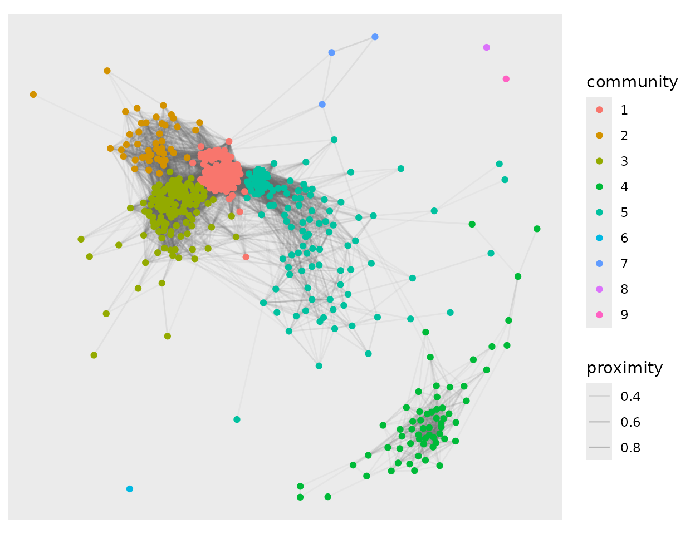

Credit scoring is the running example across Proximum,
rankimp and e2tree, for three reasons. The
regulatory context makes explanation a requirement rather than a nicety;
the data are large enough that the
cost of a proximity matrix bites; and the predictors are correlated
enough that different importance measures genuinely disagree.
The portfolio here is synthetic. Public credit panels that can be
redistributed have had the protected attributes stripped out of them,
and the third question below cannot be asked without one.
?loans records what was built into the data and
inst/data-raw/loans.R is the specification as code. Read
the numbers as a demonstration of what the diagnostics say, not as a
fact about consumer lending.
library(Proximum)
library(randomForest)
#> randomForest 4.7-1.2
#> Type rfNews() to see new features/changes/bug fixes.
str(loans, give.attr = FALSE)
#> 'data.frame': 2000 obs. of 13 variables:
#> $ default : Factor w/ 2 levels "no","yes": 1 1 1 1 1 1 1 2 1 1 ...
#> $ amount : num 8125 4425 29275 15675 8675 ...
#> $ income : num 27233 30134 115880 47298 58451 ...
#> $ dti : num 0.436 0.255 0.385 0.562 0.397 0.447 0.532 0.305 0.487 0.6 ...
#> $ term : Factor w/ 2 levels "36 months","60 months": 2 1 2 1 1 2 1 1 1 1 ...
#> $ employment : num 6 7 17 0 3 3 2 10 5 9 ...
#> $ score : num 720 673 644 758 553 748 696 582 622 598 ...
#> $ utilisation : num 0.352 0.445 0.566 0.345 0.367 0.721 0.157 1 0.245 0.498 ...
#> $ delinquencies : int 0 2 0 0 0 0 0 0 0 1 ...
#> $ home : Factor w/ 3 levels "rent","mortgage",..: 3 3 2 2 2 1 1 1 2 2 ...
#> $ purpose : Factor w/ 5 levels "debt consolidation",..: 5 1 1 1 1 2 1 1 1 1 ...
#> $ vintage : Factor w/ 4 levels "2019","2020",..: 1 1 1 1 1 1 1 1 1 1 ...
#> $ applicant_group: Factor w/ 2 levels "A","B": 1 1 1 1 2 1 1 2 2 2 ...Two columns are not predictors. vintage is the
origination year, held back for the second question, and
applicant_group is a protected attribute that the model is
not allowed to see and that the third question is about.
predictors <- setdiff(names(loans), c("applicant_group", "vintage"))
set.seed(1)
rows <- sample(nrow(loans), 500)
book <- loans[rows, ]
rf <- randomForest(default ~ ., data = book[, predictors], ntree = 500)
px <- as_proximity(rf, newdata = book[, predictors])
summary(px)
#> <proximity> summary
#> observations : 500
#> engine : randomForest ( 500 trees )
#> type : inbag
#> off-diagonal :
#> 0% 25% 50% 75% 100%
#> 0.000 0.006 0.046 0.146 0.984
#> exact zeros : 13.8%
#> euclidean : TRUE1. Are there segments, and are they risk segments?
A lender’s segments are drawn by hand: thin file, high utilisation,
short tenure. The forest draws its own, and they are in the proximity
rather than in any coefficient. autoplot(type = "network")
keeps the pairs the forest puts above a threshold and reads the
communities of the graph that remain.

The communities are not labelled with anything the forest was told. Whether they are risk segments is a question to be asked of them afterwards:
community <- picture$layers[[2]]$data$community
segments <- aggregate(
cbind(default == "yes", score, utilisation) ~ community,
data.frame(community, book), mean
)
names(segments) <- c("community", "default_rate", "score", "utilisation")
segments$n <- as.vector(table(community))
segments[order(-segments$default_rate), ]
#> community default_rate score utilisation n
#> 6 6 1.000000000 646.0000 0.6230000 1
#> 8 8 1.000000000 658.0000 0.2110000 1
#> 9 9 1.000000000 593.0000 0.1830000 1
#> 4 4 0.873015873 614.3968 0.8391746 63
#> 7 7 0.333333333 648.6667 0.9150000 3
#> 5 5 0.085470085 617.6325 0.4872222 117
#> 2 2 0.066666667 712.1778 0.8326444 45
#> 3 3 0.059701493 723.2313 0.4435970 134
#> 1 1 0.007407407 722.8222 0.5205111 135
mean(book$default == "yes")
#> [1] 0.162Read the table rather than this paragraph for the figures, since a community label is a clustering of a particular fit and the exact counts move with the seed. What does not move is the shape of it. One community of about sixty borrowers defaults at close to nine in ten, against a book rate of one in six. It is neither the low-score community nor the high-utilisation community: its mean score sits near 614 and its mean utilisation near 0.84, while the two communities that have one of those without the other default at well under a tenth. The forest has found an interaction, and the proximity shows it as a block, because a block of observations the model keeps together is what an interaction looks like once you stop reading coefficients.
Some communities hold a single borrower. Those are not segments, they are what a threshold of 0.2 leaves isolated, and reporting them as segments would be reading the threshold rather than the data.
2. Does the structure survive a shift in the window?
The portfolio spans four origination years and the relationship moves across them: by construction, utilisation carries three times the weight in 2022 that it carries in 2019. A lender who refits annually wants to know whether the model has reorganised its view of the book or merely re-estimated it.
The question cannot be answered by comparing two proximity matrices on different borrowers. It is answered by applying both forests to the same borrowers and comparing what each makes of them:
early <- loans$vintage %in% c("2019", "2020")
late <- loans$vintage %in% c("2021", "2022")
set.seed(3)
held <- loans[late, ][sample(sum(late), 400), ]
forest_on <- function(subset, seed) {
set.seed(seed)
randomForest(default ~ ., data = loans[subset, predictors], ntree = 500)
}
represent <- function(fit) as_proximity(fit, newdata = held[, predictors])A difference is only a difference against the noise floor, and the noise floor here is how much two refits of the same window disagree:
replicates <- lapply(1:4, function(i) represent(forest_on(early, 100 + i)))
stability(replicates)
#> <proximity_stability>
#> replicates : 4 on 400 observations
#> statistic : mantel
#> comparisons: 6 pairs of replicates
#> median : 0.9906
#> 95% percentile interval: 0.9902 to 0.9909Four refits of the early window agree with each other at a Mantel correlation of 0.99, and the six pairwise comparisons span 0.990 to 0.991. That is the floor. Now the two windows:
mantel_test(represent(forest_on(early, 1)),
represent(forest_on(late, 2)), n_perm = 999)
#>
#> Mantel test (pearson, 999 permutations of the observations)
#>
#> data: represent(forest_on(early, 1)) and represent(forest_on(late, 2))
#> r = 0.8582, pairs = 79800, permutations = 999, p-value = 0.001
#> alternative hypothesis: greater0.86, against a floor of 0.99. The two forests are far from independent, which is the expected part: they are fitted to the same kind of borrower and agree on the broad ordering. But the gap is many times the spread between refits, so the answer to the question is that the forest does reorganise, and the monitoring that would catch it is a Mantel correlation against last year’s model rather than a comparison of accuracies, which would have shown nothing.
3. What is the protected attribute worth to the model that never saw it?
applicant_group was not in the formula. It affects the
default probability nowhere in the generating process. It does shift the
income and the score, which are in the formula, so the question is
whether the representation the forest builds separates the groups
anyway, and by how much.
[permanova()] partitions the variation in the proximity
across the terms of a design, so the outcome and the attribute can be
entered together and the attribute read after the outcome is accounted
for:
permanova(px, ~ default + applicant_group, data = book, n_perm = 999)
#> Permutation test for the proximity dissimilarity
#> Terms added sequentially (first to last), 999 permutations of the observations
#> Dissimilarity: sqrt(1 - P) on px
#> Model: ~default + applicant_group
#> Df SumOfSqs R2 F Pr(>F)
#> default 1 6.926 0.03095 15.9403 0.001 ***
#> applicant_group 1 0.930 0.00415 2.1392 0.002 **
#> Residual 497 215.947 0.96490
#> Total 499 223.803 1.00000
#> ---
#> Signif. codes: 0 '***' 0.001 '**' 0.01 '*' 0.05 '.' 0.1 ' ' 1The outcome accounts for 3.1 per cent of the variation in how the forest arranges the borrowers. The attribute the model never received accounts for a further 0.4 per cent, and that share is reliably not zero: across 999 permutations of the borrowers, at most one reproduced it.
Read the two numbers together and neither alone. 0.4 per cent is small, and a diagnostic that called it alarming would be worthless the first time it met a real portfolio. What it is not is zero, and it is measured on a model that was never given the attribute, on data where the attribute causes nothing. This is the leakage that comes free with correlated predictors, and its size is the thing worth tracking between refits.
What this does not show
The proximity is a description of the model, not of the borrowers.
Everything above is a statement about how this forest arranges this
book, and a different forest on the same book will arrange it
differently, which is what the first part of question 2 measures. None
of it is a statement about who defaults, and none of it is a fairness
certificate: a permanova() that reports 0.4 per cent has
measured one thing about one representation, and the question of whether
a lending decision is fair is not settled by a percentage.